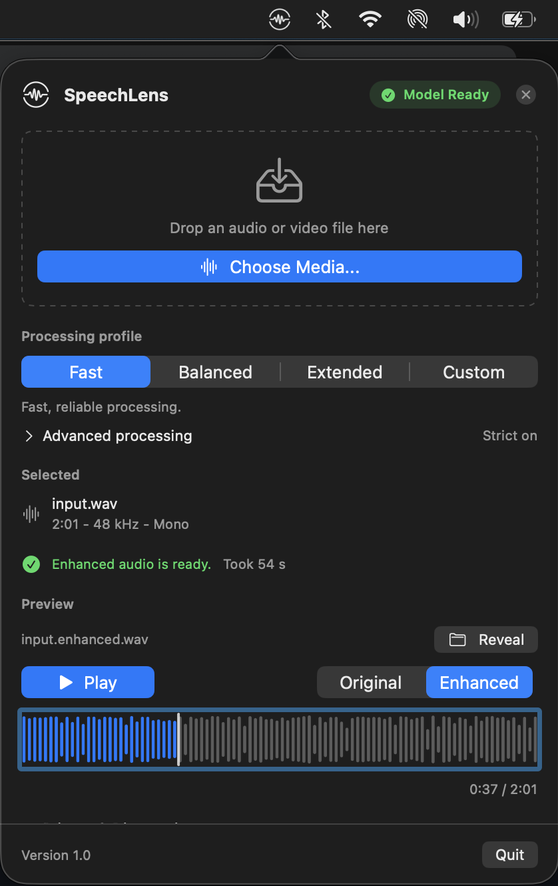

Audio stays local
Your media is processed on your Mac.
Speech enhancement Apple Silicon
Enhance audio and video locally with NVIDIA’s RE-USE model. Your audio stays on your Mac.
Apple Silicon · macOS 14+ · Signed and notarized for macOS
Model weights are licensed for non-commercial research and educational use. Read the model terms
A real before-and-after
Switch versions at the same point in the recording.
Your media is processed on your Mac.
Preserves the input sample rate and frame count.
Preserves channel layout without downmixing.

The SpeechLens menu-bar appA focused Mac utility
Work with common formats, including audio and video.
Run RE-USE locally with Swift, MLX and Metal.
Listen to the original and enhanced audio, then find the output in Finder.
On first launch, review the model terms and download the model.
Installation stepsMeasured on Apple Silicon
A native Mac app and CLI, with published performance measurements and source code.
2.3×–6.6× real-time on tested M1 Max inputs
Read the benchmark methodologyRelease-mode streaming measurements. Enhancement timing excludes model loading and file I/O; results vary by input and Mac.
Good to know
SpeechLens runs on Apple Silicon with macOS 14 or newer. On first launch, the app asks you to review the model terms and downloads the separate model weights.
The SpeechLens source code is Apache-2.0. The separately licensed NVIDIA RE-USE weights are limited to non-commercial research and educational use. Review the upstream model terms and the SpeechLens artifact notes before using the weights.
Audio and video media are processed locally and are not uploaded. The app has separate, consent-based reliability and performance diagnostics; they do not include audio, filenames or paths. Read the privacy details.
Yes. SpeechLens also provides a command-line interface for scripted enhancement. See the CLI instructions in the repository.
CitySpeechMix urban noise. Modan Tailleur, Mathieu Lagrange, Pierre Aumond and Vincent Tourre (2025), CitySpeechMix: A Simulated Dataset of Speech and Urban Sound Mixtures from LibriSpeech and SONYC-UST. DOI 10.5281/zenodo.15405950. CC BY 4.0. The enhanced sample was processed with SpeechLens; both listening files were encoded to MP3.
Edinburgh noisy speech. Cassia Valentini-Botinhao (2017), Noisy speech database for training speech enhancement algorithms and TTS models, 2016 [sound], University of Edinburgh DataShare. DOI 10.7488/ds/2117. CC BY 4.0. The enhanced sample was processed with SpeechLens; both listening files were encoded to MP3.